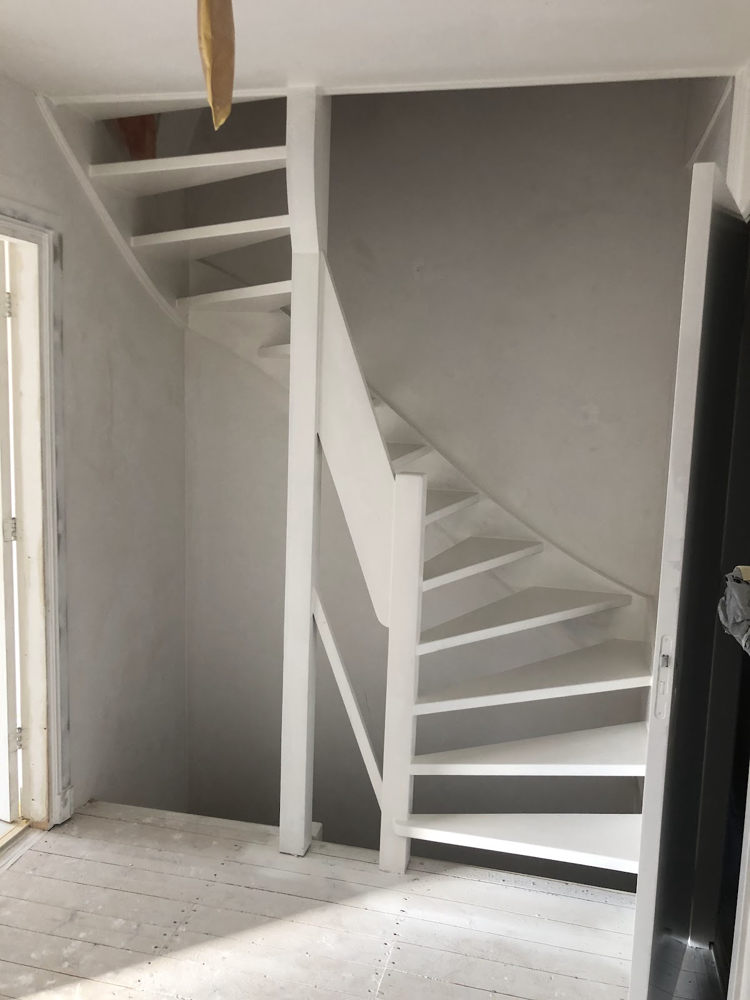
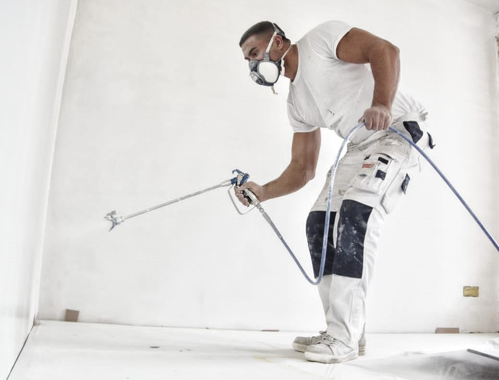
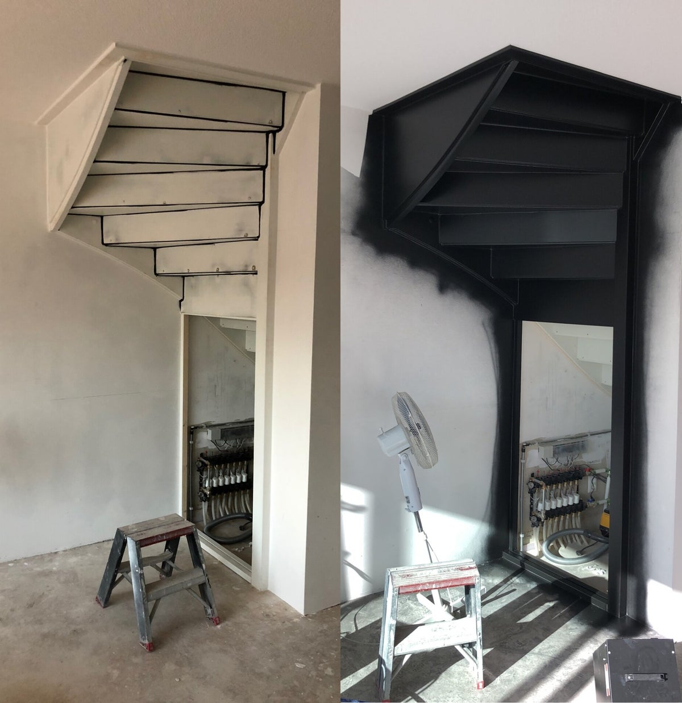
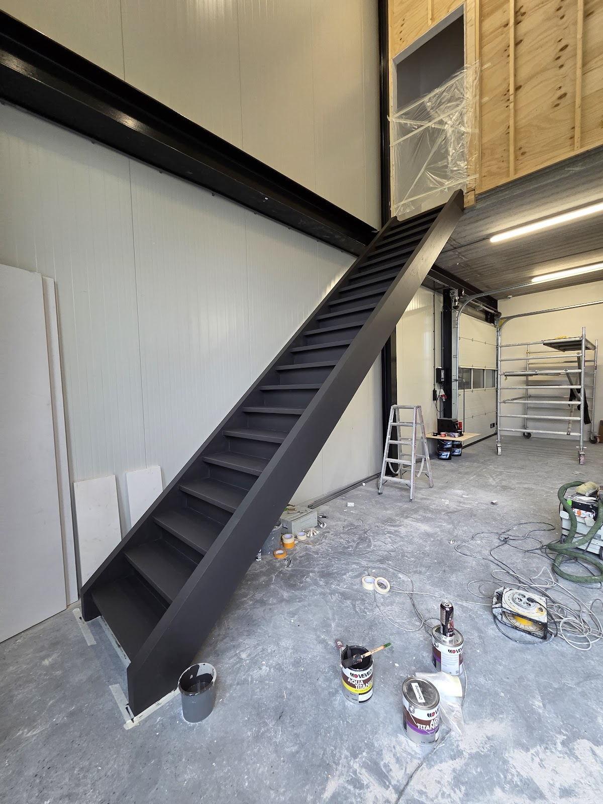
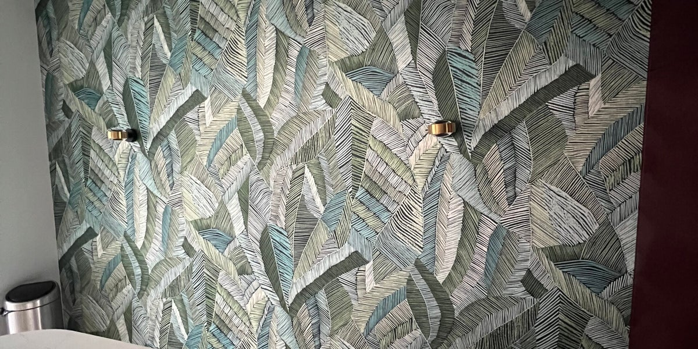
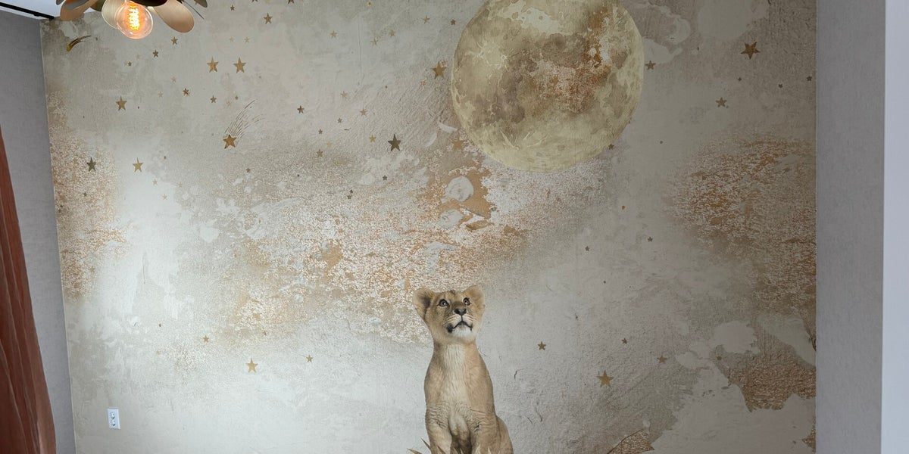
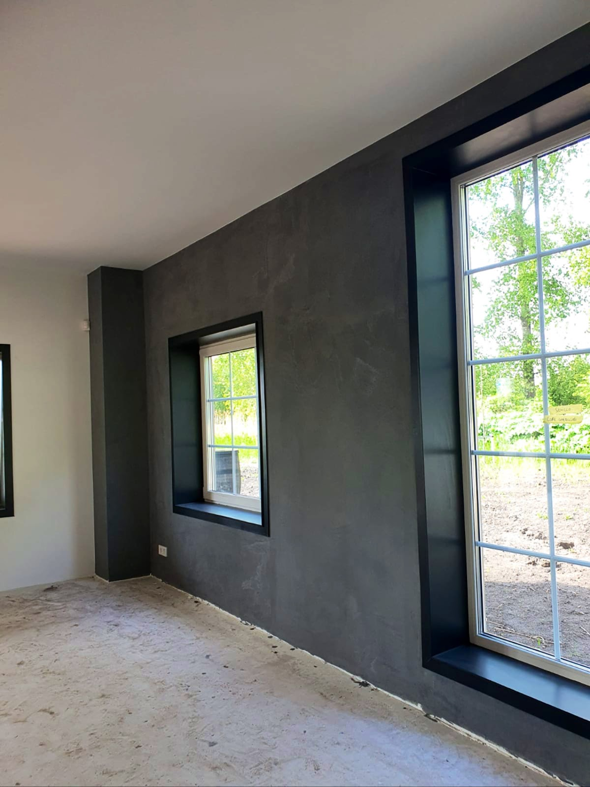
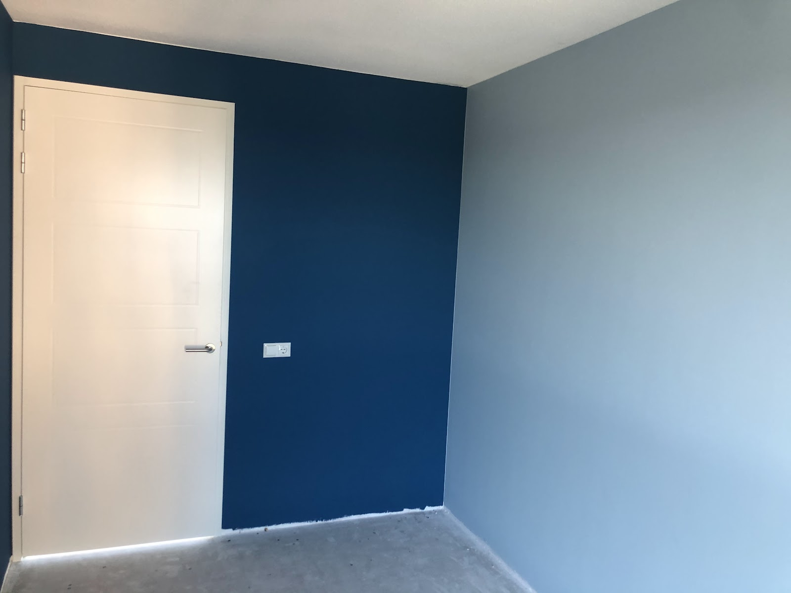

Lakwerk op deuren, kozijnen en trappen
Lak gespoten in plaats van gekwast: geen strepen, een gelijkmatige laag. Ook voor trappen die er na het schuren en lakken uitzien als nieuw.
Schilder in Ede en omgeving
Binnenschilderwerk en airless spuitwerk voor wanden, plafonds, deuren, kozijnen en trappen. Eerlijk advies vooraf, en afspraak is afspraak.
5,0 uit 33 Google-reviews

voor naLatex spuiten geeft de strakste wandafwerking die er is. Met onze professionele machines spuiten we latex en verf op plafonds, wanden, deuren, trappen, kozijnen en zelfs meubels.
Dat kan ook als u gewoon thuis woont. Vloeren en meubels plakken we netjes af, zodat alleen de muur kleur krijgt.
Gaat u verhuizen, verbouwen, heeft u waterschade of is uw huis toe aan een opknapbeurt? Wij doen de klus en adviseren over de juiste afwerking.

Lak gespoten in plaats van gekwast: geen strepen, een gelijkmatige laag. Ook voor trappen die er na het schuren en lakken uitzien als nieuw.

Van een trap in een nieuw bedrijfspand tot een meldkamer die een nieuw kleurtje nodig had.


Renovlies en glasvezel om op te schilderen, maar ook patroon- en fotobehang. Exclusief behang van bijvoorbeeld Arte en Elitis plakken we ook, en we kunnen het voor u leveren.
Samen met vaste stukadoors maken we uw wanden weer glad: normaal stucwerk, dunpleister of naden smeren. Decoratief stucwerk kan ook.


Kleur maakt een ruimte groter of knusser, rustiger of juist luchtiger. Omdat we elke dag met verf werken, weten we wat een kleur doet en welke producten erbij passen. Dat advies krijgt u er gewoon bij.
"Nice gewerkt en thanks voor het advies van een ander kleurtje. ziet er weer super strak uit"
U vraagt een offerte aan. We plannen een afspraak om de klus bij u op te nemen.
U krijgt vooraf volledig inzicht in prijs en kwaliteit, en geeft akkoord.
We gaan aan de slag volgens een vast protocol, zodat de kwaliteit elke keer klopt.
Samen lopen we een rondje langs het werk en zetten we waar nodig de puntjes op de i. Niet helemaal tevreden? Dan werken we het kosteloos bij.
"Davey Deuning heeft bij ons het hele huis geschilderd en gespoten, vanaf het eerste contact moment kwam hij betrouwbaar en vakbekwaam over, en dat is ook in het eind resultaat te zien. Oog voor detail en strak en net schilder/spuitwerk afgeleverd. We zijn zelf ook erg blij met het eindresultaat."
"Davey en Kevin hebben ons hele huis in verschillende kleuren geverfd en gespoten. En behangen. Oog voor detail. Straks afgewerkt. Heel blij mee."
"Top schilder. Hij heeft de huiskamer en keuken en gang met drie kleuren een mooie sfeer gegeven. Werkt precies en komt afspraken na. Dank voor het mooie resultaat Dave."
"Ouderwetse kwaliteit; afspraak is afspraak; geen verassingen achteraf en overleggen kan altijd."
"Zeer vakkundige schilder werkt netjes!! En het resultaat is zeer mooi."
Overdag staan we vaak op de steiger. Neemt niemand op? Spreek de voicemail in of stuur een bericht, dan bellen we zo snel mogelijk terug.
06 83794864 info@schildersbedrijfdeuning.nlWe werken in Ede, Bennekom, Wageningen, Lunteren, Veenendaal, Barneveld, Arnhem, Amersfoort, Rhenen en verder.